The Morrowind Visualisation Project aims to showcase Morrowind mods in a new light through taking advantage of Unreal Engine 5's capabilities. Immersive experiences are built on an ecosystem of tools and a carefully curated modlist.
This is not a remaster - it's an explorable experience that pushes the limit.